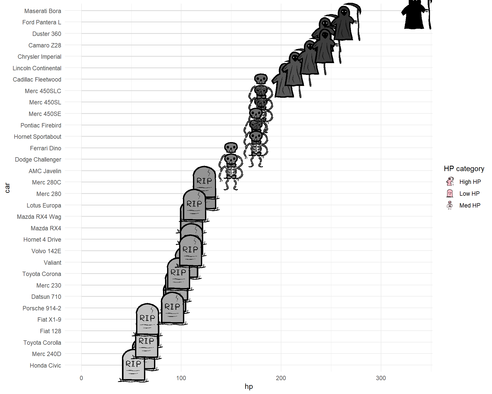
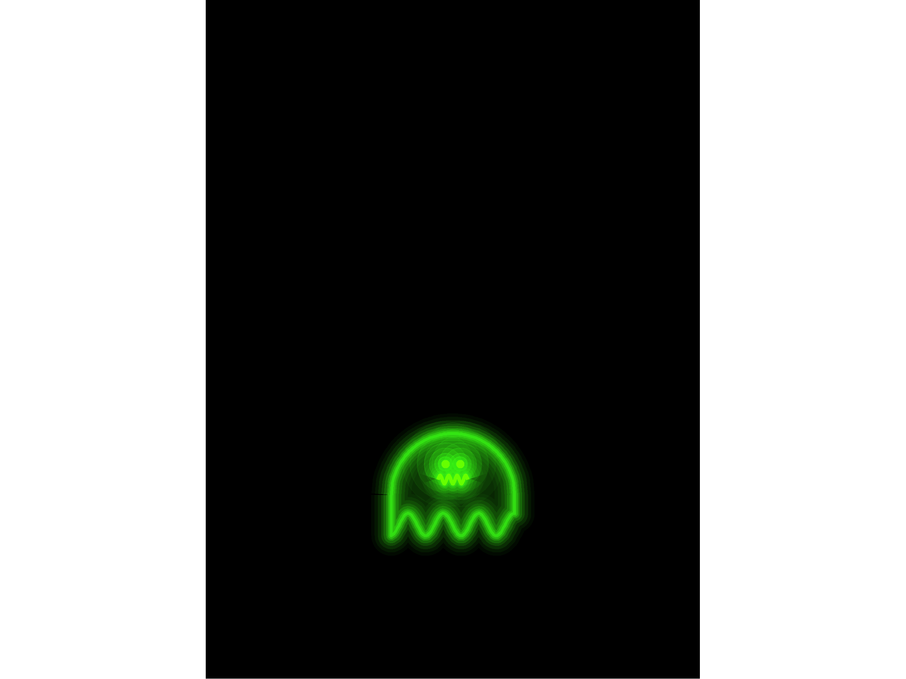

R is for
Authoring!!
Open Office Hours
(October 31, 2026)
- Recap session #153
- Today’s topic(s):
- Shared problem-solving
Reminder – check it out!!
Fantastic

Recap of Session
#153:


“
library(ggfoundry)
library(tidyverse)
data(mtcars)
mtcars <- as.data.frame(mtcars)
cars <- rownames_to_column(mtcars, var = "car") |>
mutate(
car = fct_reorder(car, desc(-hp)),
# Binary split (adjust the cut point as needed)
# hp_cat = if_else(hp >= 150, "High HP", "Low HP")
# Or for more bins:
hp_cat = case_when(hp <= 140 ~ "Low HP",
hp <= 200 ~ "Med HP",
TRUE ~ "High HP")
)
cars |>
ggplot(aes(x = hp, y = car, fill = hp, shape = hp_cat)) +
geom_segment(
aes(x = 0, xend = hp, yend = car),
colour = "grey85",
linewidth = 0.6
) +
geom_casting(size = 0.135, colour = "black") +
scale_shape_manual(
values = c("Low HP" = "gravestone", "Med HP" = "skeleton", "High HP" = "grimreaper"),
name = "HP category"
# For more levels, extend the named vector, e.g.:
# values = c("Low" = "gravestone", "Med" = "pumpkin",
# "High" = "jackolantern", "Very high" = "ghost")
) +
scale_fill_gradient(low = "grey80", high = "black", guide = "none") +
theme_minimal()
library(ggplot2)
library(scales)
#' Ghost plotting function
#' @param ghost_df Data frame with x and y coordinates of the ghost shape
#' @param ghost_color Color of the ghost (default is neon green)
#' @return ggplot object of the ghost
plot_simple_ghost <- function(ghost_df, ghost_color = "#39FF14") {
x_center <- mean(range(ghost_df$x))
y_top <- max(ghost_df$y)
y_bottom <- min(ghost_df$y)
ghost_height <- y_top - y_bottom
ghost_width <- diff(range(ghost_df$x))
# Eyes
eye_y <- y_bottom + .7 * ghost_height
eye_x <- x_center + c(-0.06, 0.06) * ghost_width
eyes <- data.frame(x = eye_x, y = rep(eye_y, 2))
# Mouth: several waves
mouth_width <- ghost_width * 0.4
mouth_x <- seq(x_center - 0.3 * mouth_width, x_center + 0.3 * mouth_width, length.out = 80)
mouth_y <- y_bottom + 0.55 * ghost_height + sin(seq(0, 7 * pi, length.out = 80)) * 0.04 * ghost_height
mouth <- data.frame(x = mouth_x, y = mouth_y)
# 8 neon glow layers
glow_layers <- data.frame(
linewidth = c(12, 10, 8, 6, 4.5, 3, 2, 1),
alpha = c(0.04, 0.06, 0.09, 0.13, 0.18, 0.25, 0.35, 0.5)
)
p <- ggplot() +
geom_polygon(
data = ghost_df, aes(x, y),
fill = ghost_color, alpha = 0.15, color = NA
)
# Glow layers for outline, eyes, and mouth
for(i in seq_len(nrow(glow_layers))) {
p <- p +
geom_polygon(
data = ghost_df, aes(x, y),
fill = NA, color = scales::alpha(ghost_color, glow_layers$alpha[i]),
linewidth = glow_layers$linewidth[i]
) +
geom_point(
data = eyes, aes(x, y),
color = scales::alpha(ghost_color, glow_layers$alpha[i]),
size = glow_layers$linewidth[i] * 2.1 ## 1.1
) +
geom_path(
data = mouth, aes(x, y),
color = scales::alpha(ghost_color, glow_layers$alpha[i]),
linewidth = glow_layers$linewidth[i]
)
}
# Solid black mouth and eyes
p <- p +
geom_path(
data = mouth, aes(x, y),
color = "#66ff00", linewidth = 1.2 ## with green ghost
) +
geom_point(
data = eyes, aes(x, y),
color = "#66ff00",
size = 2
)
# Fix aspect ratio and theme
p +
coord_fixed(
xlim = c(-4, 4),
ylim = c(-3, 8),
expand = TRUE
) +
theme_void() +
theme(
plot.background = element_rect(fill = "black", color = NA),
panel.background = element_rect(fill = "black", color = NA)
)
}
#' Generate a random ghost shape
#' @param seed Optional seed for reproducibility
#' @return Data frame with x and y coordinates of the ghost shape
ghost_shape <- function(seed = NULL) {
if (!is.null(seed)) set.seed(seed)
width <- sample(seq(0.5, 3, length.out = 6), 1)
height <- sample(1:6,1)
x <- seq(-1, 1, length.out = 100) * width
amp <- runif(1, 0.15, 0.28)
freq <- sample(3:7, 1)
phase <- runif(1, 0, 2*pi)
y_top <- sqrt(1 - (x/width)^2) * height + runif(1, -0.03, 0.03)
y_bottom <- -0.5 * height + sin(seq(0, freq * pi, length.out = 100) + phase) * amp * height
data.frame(
x = c(x, rev(x)),
y = c(y_top, rev(y_bottom))
)
}
ghost_shape() |>
plot_simple_ghost(ghost_color = "#39FF14")


Today…


R version 4.5.0 (2025-04-11 ucrt)
Platform: x86_64-w64-mingw32/x64
Running under: Windows 10 x64 (build 19045)
Matrix products: default
LAPACK version 3.12.1
locale:
[1] LC_COLLATE=English_United States.utf8
[2] LC_CTYPE=English_United States.utf8
[3] LC_MONETARY=English_United States.utf8
[4] LC_NUMERIC=C
[5] LC_TIME=English_United States.utf8
time zone: America/Chicago
tzcode source: internal
attached base packages:
[1] stats graphics grDevices utils datasets methods base
other attached packages:
[1] scales_1.4.0 lubridate_1.9.5 forcats_1.0.0
[4] stringr_1.6.0 dplyr_1.2.0 purrr_1.0.4
[7] readr_2.2.0 tidyr_1.3.2 tibble_3.3.1
[10] tidyverse_2.0.0 ggfoundry_0.4.0.9000 ggplot2_4.0.3
loaded via a namespace (and not attached):
[1] gtable_0.3.6 jsonlite_2.0.0 compiler_4.5.0 tidyselect_1.2.1
[5] png_0.1-8 yaml_2.3.12 fastmap_1.2.0 R6_2.6.1
[9] labeling_0.4.3 generics_0.1.4 grImport2_0.3-3 knitr_1.51
[13] XML_3.99-0.19 tzdb_0.5.0 pillar_1.11.1 RColorBrewer_1.1-3
[17] rlang_1.1.7 stringi_1.8.7 xfun_0.57 S7_0.2.1
[21] otel_0.2.0 timechange_0.4.0 cli_3.6.5 withr_3.0.2
[25] magrittr_2.0.4 digest_0.6.39 grid_4.5.0 rstudioapi_0.18.0
[29] hms_1.1.4 base64enc_0.1-6 lifecycle_1.0.5 vctrs_0.7.2
[33] evaluate_1.0.5 glue_1.8.0 farver_2.1.2 rmarkdown_2.31
[37] tools_4.5.0 jpeg_0.1-11 pkgconfig_2.0.3 htmltools_0.5.9 Quarto version 1.10.18